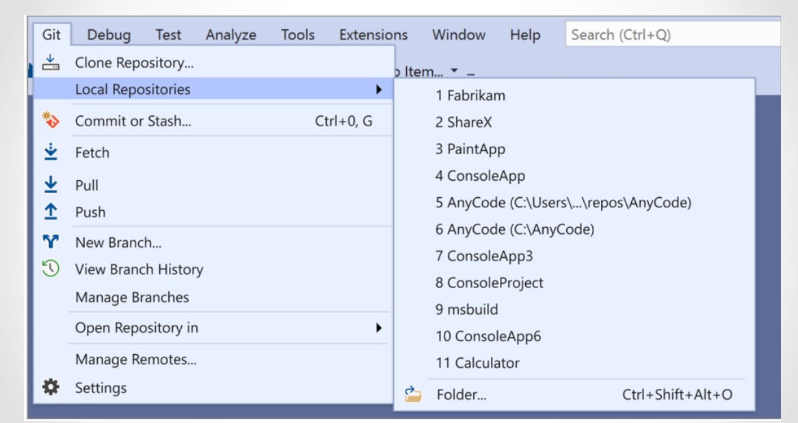
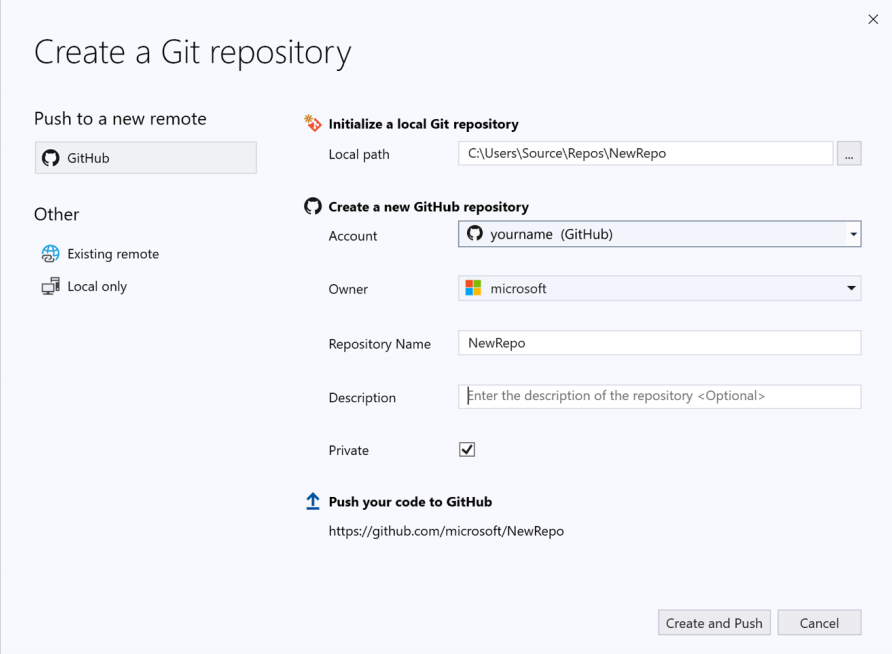
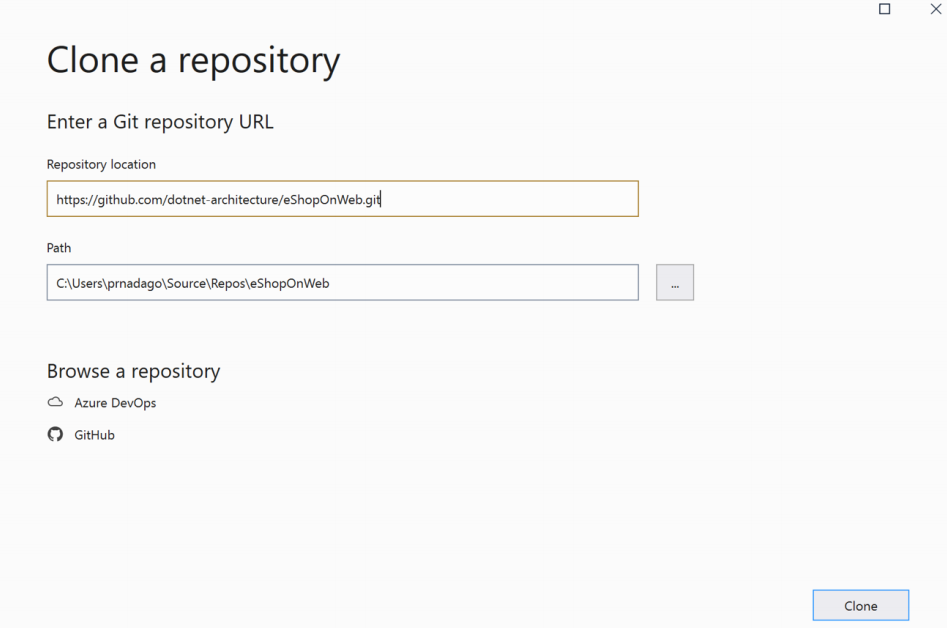
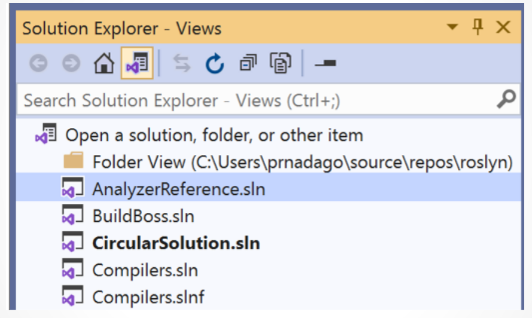
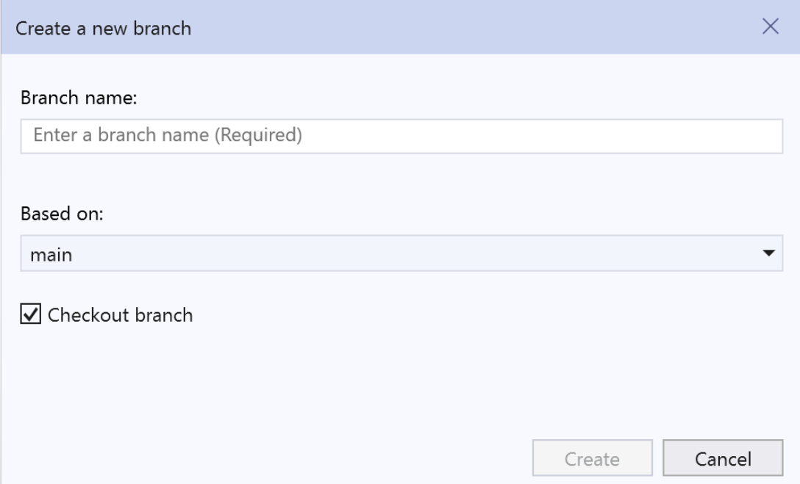
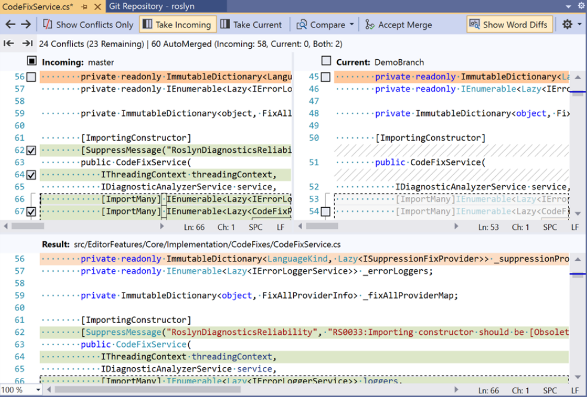

Visual Studio 2019 nos permite utilizar Git para guardar nuestros proyectos de varias maneras:
Si tenemos un repositorio Git inicializado en nuestro equipo bastara con abrir un proyecto en Visual Studio y este detectara automaticamente que existe un repositorio Git.
Si ya tenemos el codigo, pero no el repositorio Git, simplemente crearemos un nuevo repositorio Git.
Si el el codigo no se encuentra en nuestro equipo, podemos clonar un repositorio remoto.
Visual Studio detecta la existencia de uno o varios repositorios, pero nosotros deberemos elegir en cual guardarlo.
Para ello nos dirigieremos a la pestaña "Git" en la barra superior en Visual Studio y en el menu desplegable seleccionaremos el repositorio que queremos utilizar.
Para crear un repositorio Git desde Visual Studio, en la barra superior seleccionaremos "GIT" > "Crear repositorio GIT". A continuacion se nos pedirá nuestra informacion de GitHub.
Tras introducir los datos requeridos se creara un repositorio en GitHub, aunque tambien podemos elegir la opcion "Solo locales" para crear repositorios locales o vincular el proyecto a un repositorio existente.
Si queremos trabajar en un proyecto ya existente podemos clonar su repositorio conociendo la direccion URL del mismo.
Para reali la clonacion nos dirigiremos nuevamente a la pestaña "GIT" en Visual Studio y seleccionaremos la opcion "Clonar" e introduciremos la direccion URL del repositorio que queremos clonar y la ubicacion en la que guardarlo en nuestro disco.
Al cargar cualquier solucion Visual Studio detecta si tiene un repositorio y muestra la carpeta raiz del mismo en el explorador de soluciones.
Git realiza un seguimiento de los cambios de archivo en el repositorio mientras se trabaja en el y los separa en 3 categorias:
Archivos sin modificar: Se trata de archivos que no han sido modificados desde la ultima confirmacion.
Archivos modificados: Archivos que incluyen cambios realizados desde la ultima confirmacion, pero que no se han alamacenado provisionalmente para confirmarlos.
Si queremos almacenar provisionalmente algunos cambios, hacemos click en el boton "+" en los archivos deseados y los agregamos al "Stage" o bien podemos almacenar todos seleccionando "Almacenar todo provisionalmente".
Archivos almacenados provisionalmente: Archivos que tiene cambios que seran agregados en la siguiente confirmacion.
Una vez queramos confirmar los cambios seleccionamos "Confirmar almacenados provisionalmente", equivalente al comando git commit -m "comentario".
Si hay algun cambio que al final no queramos confirmar podemos eliminarlo pulsando el boton "-", equivalente al comando git reset -file_path-
Visual Studio nos muestra la rama en la que nos encontramos actualmente en la parte superior de la ventana "Cambios de Git".
Para cambiar de rama basta con darle click a la rama a la que queramos movernos.
Tambien podemos crear uan rama con un solo click, seleccionando "Nueva rama" e introduciendo el nombre que queramos,0 equivalente al comando git checkout -b -nombre rama-.
En el apartado "Administrar ramas" en el manu de Git podemos usar el menu contextual para crear ramas, fusionarlas, combinarlas...
Visual Studio tiene una ventana en la cual nos muestra todos los detalles del repositorio, las ramas, elementos remotos e historial de confirmaciones.
Podemos acceder a esta ventana en la pestaña "Git" o "Vista" en la barra de menu.
A la hora de fusionar archivos pueden producirse conflictos si 2 o mas personas modifican las mismas lineas de un archivo, ya que it no sabra cual es la correcta, por lo que Git detien la fusion e informa que esta en un estado con conflictos.
La ventana Repositorio de Git muestra una barra dorada con informacion sobre el error de fusion.
De igual modo la ventana Cambios de Git hace lo mismo.
Para resolver el conflicto debemos darle click al vinculo del mensaje de error que nos muestra Visual Studio, lo cual nos abrira el editor de combinacion.
El editor de combinacion de Visual Studi es una herramienta de combinacion que muestra los cambios entrantes, actuales y el resulatado de la combinacion.
Utilizando la barra de herramientas podemos desplazarnos entre los conflictos y las diferencias de combinacion en el archivo.
Tambien podemos mostrar u ocultar las diferencias de palabras y personalizar el diseño.
Una vez hayamos resuelto los conflictos, seleccionamos el boton "Aceptar combinacion" del editor de combinacion, segiodo de un mensaje de confirmacion.